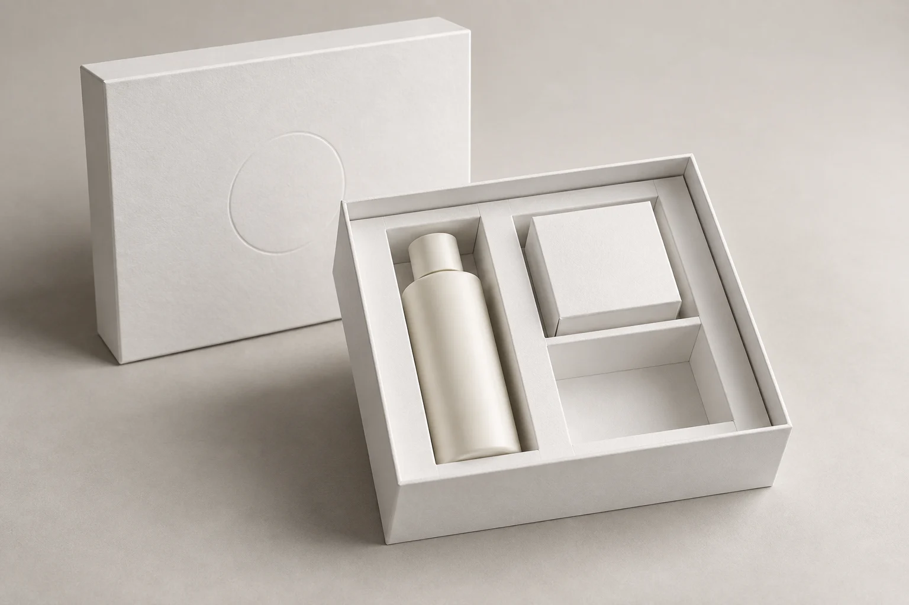

Картонная вставка
Перегородки, ячейки, прорези и опоры под товар. Можно обсудить конструкцию из складного картона или гофрокартона.
Упаковка продукта и наборов
Помогу подобрать конструкцию коробки и внутренней вставки, проверить посадку товара на образце и организовать выпуск тиража. Для продукта, подарочного набора или образцов.
Динар ДинмухаметовЛично веду ваш заказ
Формат для обсуждения.
Конструкцию разработаем под ваш товар.
Продумано до тиража
Ложемент — внутренняя вставка, которая размещает и фиксирует товар. Материал и форму выбираем под конкретный продукт. Важно учесть не только внешний вид набора, но и вес, хрупкость, сборку и извлечение.
Если пока непонятно, нужна ли жёсткая коробка, начнём с задачи и сравним варианты. Стоимость разработки, образца и тиража согласуем отдельно.
Варианты под задачу
Перегородки, ячейки, прорези и опоры под товар. Можно обсудить конструкцию из складного картона или гофрокартона.
Материалы вроде EVA или вспененного полиэтилена обсуждаем, когда нужны другие свойства фиксации и защиты. Цвет, плотность и поверхность проверяем на образце.
Уточняем состав, порядок распаковки и место каждого предмета. Закладываем возможность вынуть продукт пальцами.
Коробка должна выдерживать повторное открывание и удобно показывать содержимое. Уточняем, как её перевозят и кто пользуется набором.
Физический образец
До тиража согласуем конструкцию и то, как будем оценивать результат.
Что проверяет белякПредмет держится на месте и удобно извлекается. Сверяем размеры всех составляющих набора.
Проверяем точки контакта, люфты, отделку и закрывание. Образец оцениваем с реальным содержимым.
Проверяем комплектацию и транспортную упаковку. Красивый ложемент сам по себе не доказывает защиту при доставке.
Для первого обсуждения
Фотография и размеры каждого предмета, вес и хрупкость, состав набора, примерное количество, пожелания к печати и отделке. Для проверки посадки понадобится сам товар либо согласованный эквивалент.
Готовое техническое задание необязательно. Я помогу уточнить параметры и предложу следующий шаг.
Обсудить коробкуКак я работаю
Получаю товар или его параметры. Уточняем задачу, комплектацию и нужные тиражи.
Разрабатываем конструкцию, подгоняем размеры коробки и ложемента. Проверяем посадку товара на беляке и вносим правки.
Подбираем материалы и отделку. Согласуем цветной образец и фиксируем спецификацию изделия.
По утверждённой спецификации рассчитываю нужные количества. После согласования организую изготовление и контролирую результат.
Сначала — изделие
Образец позволяет проверить решение руками: как сидит продукт, открывается крышка и собирается конструкция.
Фиксируем размеры, материал, ложемент, печать и отделку. Расчёт тиража опирается на согласованное изделие — с понятным составом и комплектацией.
Полезное об упаковке
Начнём с разговора
Пришлите фото товара, размеры и примерное количество.
Помогу определить, с чего начать разработку.
Динар Динмухаметов
Ваш собеседник на всём пути
Работаю с юридическими лицами. Макеты и файлы можно приложить в выбранном мессенджере.